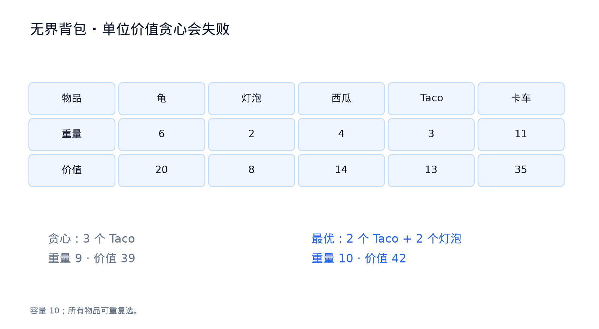
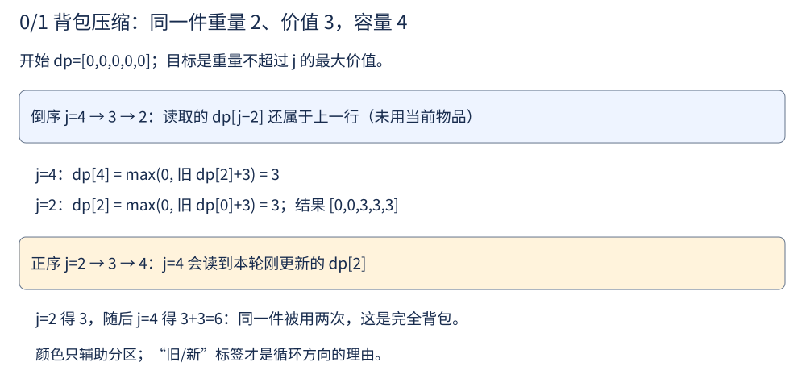

第 22 讲 · 背包 DP¶
阅读起点：第 20 讲：状态、基例与转移；第 2 讲：数组覆盖；本讲解释不可达初值。
首读范围：先看二维 0/1 状态再压缩；先做最少硬币，后做组合计数；伪多项式可先读例子。
这一讲用同一个套路把这类问题引出来：先端出一个看起来很有道理的贪心，再当场看着它翻车。
先看切钢条。一根长 L 的钢条，每个长度 ℓ 有售价 v(ℓ)，问怎么切最赚钱。最顺手的想法是"每单位长度卖得最贵的，多切几段就好"。取 L = 7、v = [0, 1, 10, 13, 18, 20, 31, 32]。单位长度最贵的是长度 6（31/6 ≈ 5.17），切成 [6, 1] 得 31 + 1 = 32；而 2 + 2 + 3 得 10 + 10 + 13 = 33。贪心少赚了一块。
再看一种相关任务：背包有固定容量，每种物品给出重量和价值，各有无限多件，每件只能整件放入，要求总重量不超过容量、总价值尽量大。下面会用容量 10 的具体数据说明，优先拿单位重量价值最高的物品也可能失败。
这一讲要处理的，就是被这两个反例否掉的那一类问题——选物品。
两个反例是怎么坏掉的¶
切开来看，两次翻车的病因一模一样。
切钢条时，贪心盯着"每一段自己的性价比"，于是选了长度 6 那一段；剩下的 1 只能换 1 块钱，凑成 32。而放弃"单位最贵"的 6，改用 2+2+3，反而多出 1 块。贪心评估的是每一段自身的价值，它没办法预知"切完剩下的空间还能不能卖出好价钱"。
把同样的推理搬到背包上：取价值/重量比最大的那个物品，能塞几份塞几份。同一个毛病——把最好的那份拿走之后，剩下的容量可能刚好装不下任何东西。
用一组数字看得更清楚。容量 10，五种物品：
| 物品 | 乌龟 | 灯泡 | 西瓜 | Taco | 消防车 |
|---|---|---|---|---|---|
| 重量 | 6 | 2 | 4 | 3 | 11 |
| 价值 | 20 | 8 | 14 | 13 | 35 |
单位重量最值钱的是 Taco（13/3 ≈ 4.33），所以贪心会抓 3 个 Taco：重量 9、价值 39。但装 2 个 Taco 加 2 个灯泡，重量正好 10、价值 42——贪心输给了"留一点空位给灯泡"的那个组合。
局部最优和全局最优在这里脱钩了。 所以背包问题必须换一种问法（第 24 讲会给出一个"贪心确实成立"的对照问题：活动选择）。

容量为 10，每种物品都有无限份。3 个 Taco 重 9、值 39；改成 2 个 Taco 加 2 个灯泡，重 10、值 42。单位价值最高不代表剩余容量也能得到最好利用。
先定义“剩余容量还能得到多少价值”¶
先固定一种模型：物品有正整数重量、非负价值，每种无限件，求总重量不超过 j的最大价值。dp[j] 是这个最优值，不要求恰好装满。容量为 0 时价值 0；对非零容量还允许什么都不选，因此应把候选 0 放进去：
这个方程怎样得到？非空方案里任选一件作为最后放入的物品 i，取走它后，其他物品总重量不超过 j−wᵢ，最多获得 dp[j−wᵢ]；再把它放回，价值增加 vᵢ。枚举每种能装下的物品并取最大，就覆盖所有非空方案；再和空方案的 0 比较即可。因为重量为正，依赖的容量都更小，可按 j 从小到大计算。
接下来改变一条限制：每件只能选一次，称为 0/1 背包，0 表示不选、1 表示选一次。这时“容量是多少”就不够：相同剩余容量，已经用过的物品不同，后续选择也不同。先定义二维状态 F[i][j]：只用前 i 件、重量不超过 j 的最大价值。第 i 件重量 w、价值 v：
先把这个定义逐字译成二维代码，再讨论节省空间：
def knapsack_01_table(weights, values, capacity):
# 两个列表等长；重量为正整数，价值非负，capacity>=0。
n = len(weights)
dp = [[0] * (capacity + 1) for _ in range(n + 1)]
for i in range(1, n + 1):
w, value = weights[i - 1], values[i - 1]
for j in range(capacity + 1):
dp[i][j] = dp[i - 1][j] # 不选本件
if j >= w:
dp[i][j] = max(dp[i][j], dp[i - 1][j - w] + value)
return dp[n][capacity]
只有一件重量 2、价值 3、容量 4 时，第 0 行全是 0，第 1 行为 [0,0,3,3,3]。容量 4 也只能拿这一件，所以值是 3 而不是 6。时间 O(nW)、空间 O(nW)，W 是容量。
这才是 0/1 背包的来源。一维数组不是凭空省去 i，而是在逐件处理时覆盖上一行；哪些格子已被覆盖，决定当前物品会不会用第二次。
例如只有一件 (重量2,价值3)，容量4：倒序先算 j=4，只能读取上一行 dp[2]=0，得到3；正序先让 dp[2]=3，再算 dp[4]=dp[2]+3=6，等于把同一件拿了两次。
内层循环的方向，就是"物品能不能重复用"¶

这是本讲最值钱的一行知识：
| 内层循环方向 | 含义 | 原因 |
|---|---|---|
正序 for j in range(w, W+1) |
完全背包（物品可重复取） | 算 dp[j] 时用到的 dp[j−w] 可能在这一轮已经被更新过，等价于"同一物品又用了一次" |
倒序 for j in range(W, w−1, −1) |
0/1 背包（每件最多一次） | dp[j−w] 还是上一轮（还没考虑物品 i 时）的值，本轮的物品 i 不会被重复使用 |
这个口诀只用于“外层逐件/逐类物品、内层容量、覆盖同一数组”的实现；二维方程、初值和目标仍需分别确认。 写背包题时先问自己一句"这件东西能不能用第二次"，方向就定了。
从价值、最少数量到可行性与计数¶
完全背包求最小：Coin Change¶
输入 coins 列出可用硬币面额，每种有无限枚，amount 是要恰好凑出的金额。返回所需的最少硬币枚数；凑不出返回 −1，金额为 0 返回 0。例如 coins=[1,2,5]、amount=11，可用 5+5+1，答案为 3；coins=[2]、amount=3 无解。面额为正整数，amount≥0。
这与无界背包一样允许重复选，但目标从“价值最大”变成“枚数最少”，且必须恰好凑出金额。令 F[i][j] 表示“只用前 i 种硬币，恰好凑 j 的最少枚数”。初始 F[0][0]=0，其余为 ∞。处理面额 c 时只有两类：
第二项仍在当前行 i，因为移走一枚后还能再用 c。它依赖当前行更小的金额，所以 j 必须递增。覆盖成一维数组时，dp[j] 更新前是上一行的“不用”，dp[j−c] 则已经是当前行的“还能再用”。这正是下面代码的两个候选：
def coin_change(coins, amount):
INF = float('inf')
dp = [0] + [INF] * amount # dp[0] = 0，其余先当作不可达
for c in coins:
for j in range(c, amount + 1): # 正序 → 完全背包
if dp[j - c] + 1 < dp[j]:
dp[j] = dp[j - c] + 1
return dp[amount] if dp[amount] != INF else -1
为什么初值是 inf 而不是 0？ 因为 0 意味着"凑不出来也有 0 枚硬币"，那所有金额都会变成"可达"。这里的 inf 是一个占位符，代表"目前为止无解"。
完全背包求组合数：Coin Change II¶
输入仍是互不重复的正整数面额 coins 和非负金额 amount，每种硬币无限枚，这次返回恰好凑出金额的组合数量。只看各面额用了几枚，不区分拿取顺序。例如 coins=[1,2]、amount=3 有两种：1+1+1、1+2；2+1 与 1+2 算同一种。金额 0 有一种空组合，凑不出则是 0 种。
函数沿用 LeetCode 的 change(amount,coins) 参数顺序，与前一题 coin_change(coins,amount) 不同。例如本例调用为 change(3,[1,2])，返回 2。
定义 F[i][j] 为“只用前 i 种硬币凑出 j 的组合数”。先固定允许的硬币种类，再逐步增加金额，才能避免把不同拿取顺序重复计数：
def change(amount, coins):
dp = [0] * (amount + 1)
dp[0] = 1 # 凑出 0 元有 1 种方式（什么都不选）
for c in coins: # 外层物品
for j in range(c, amount + 1): # 内层容量，正序
dp[j] += dp[j - c]
return dp[amount]
计数也可用同样的两类推导：F[i][j]=F[i−1][j]+F[i][j−c]。第一类完全不用 c，第二类至少有一枚 c，移走一枚后与金额 j−c 的组合一一对应；两类没有交集，所以相加不会重复。
这题还藏着一个高频考点：内外层的顺序决定了"组合数"还是"排列数"。
| 遍历顺序 | 得到什么 | 原因 |
|---|---|---|
| 外层物品、内层容量 | 组合数（1+2 与 2+1 算一种） |
逐件决定"这个物品用几个"，物品之间的先后不被区分 |
| 外层容量、内层物品 | 排列数（1+2 与 2+1 算两种） |
每一层都在决定"最后一步用哪个物品"，顺序被区分 |
拿 amount = 5, coins = [1, 2, 5] 亲手跑一遍：组合数是 4，排列数是 9。数字上的差异比任何解释都好记。
0/1 背包求可行性：Partition Equal Subset Sum¶
输入正整数数组 nums，问能否把所有元素分成两组，使两组和相同；每个位置必须且只能归入一组，不要求两组各自在原数组中连续。返回 True 或 False。例如 [1,5,11,5] 可分为 [11] 与 [1,5,5]。
若总和 total 是奇数，两组整数和不可能各占一半；否则只需选择一些位置凑成 target=total//2，其余元素自然也凑成 target。dp[j] 表示已处理的元素能否选出和 j，每个位置最多选一次，所以一维实现倒序更新：
def can_partition(nums):
total = sum(nums)
if total % 2:
return False
target = total // 2
dp = [False] * (target + 1)
dp[0] = True # 一个都不选，和为 0 可达
for x in nums:
for j in range(target, x - 1, -1): # 倒序 → 0/1 背包
if dp[j - x]:
dp[j] = True
if dp[target]:
return True
return dp[target]
三个要能说出口的点：总和是奇数直接返回 False；内层必须倒序（正序会变成"元素可重复使用"）；dp[0] = True 是整条递推链的起点。
0/1 背包求方案数：Target Sum¶
给定非负整数数组 nums 和整数 target，要在每个位置前放一个 + 或 −，返回最终和为 target 的符号分配数量。例如 nums=[1,1,1]、target=1 有三种：−1+1+1、+1−1+1、+1+1−1。两个相同数若在不同位置，选择哪一个加负号仍算不同方案。
设所有加正号的数之和为 P，加负号的数的原值之和为 N。那么 P−N=target，而 P+N=total，两式相加得 2P=total+target。于是只需数“能选出和 P 的位置子集”有多少个：选中的加正号，其他的加负号。P 必须是 0..total 内的整数，否则无解。
def find_target_sum_ways(nums, target):
total = sum(nums)
# 设带 + 号的数之和为 P，带 − 号的为 N：P − N = target，P + N = total
# 于是 P = (total + target) / 2
if abs(target) > total or (total + target) % 2:
return 0
P = (total + target) // 2
dp = [0] * (P + 1)
dp[0] = 1
for x in nums:
for j in range(P, x - 1, -1): # 倒序 → 0/1 背包
dp[j] += dp[j - x]
return dp[P]
"把每个数分配 + 或 −"（2ⁿ 种）被转化成了"选出和为 P 的子集"（O(nP) 的伪多项式时间），这个转化值得单独记住。
容量有两个维度：Ones and Zeroes¶
输入仅含 0、1 的字符串列表 strs，以及两个非负预算 m、n。每个字符串位置最多选一次，所选字符串合计至多含 m 个 0、n 个 1，求最多能选几个字符串。例如 strs=["10","0","1"]、m=n=1，可选 "0" 和 "1" 两个，比只选 "10" 更好。
一个字符串同时消耗两种预算，因此用 dp[i][j] 表示“0 的预算至多 i、1 的预算至多 j 时最多能选几个”。它们是预算上限，不要求恰好用完。每次选一个字符串，收益增加 1，两个预算分别扣除它的 0、1 个数：
def find_max_form(strs, m, n):
# dp[i][j] = 至多用 i 个 0 和 j 个 1，最多能挑出几个字符串
dp = [[0] * (n + 1) for _ in range(m + 1)]
for s in strs:
zeros = s.count('0')
ones = len(s) - zeros
if zeros > m or ones > n:
continue
for i in range(m, zeros - 1, -1): # 两个维度都倒序（仍是 0/1）
for j in range(n, ones - 1, -1):
dp[i][j] = max(dp[i][j], dp[i - zeros][j - ones] + 1)
return dp[m][n]
容量多一维，状态就多一维，其余不变——这是"维度扩展"的标准做法。
"恰好装满"和"不超过容量"是两件事¶
同一道背包题，问法的细微差别会直接改变初值：
- 恰好凑出 j：初值随目标变化。最少个数用
+inf，最大价值用−inf，可行性用 False，方案数用 0；dp[0] 分别为 0、0、True、1； - 容量不超过 j：
dp[j]表示"最多用 j 的容量"，若目标是最大价值且价值非负，全部初始化为 0（什么都不装也是合法方案）；其他目标仍要按状态含义设置初值。
Coin Change 问的是"恰好凑出 amount"，凑不出要返回 −1，所以用 inf；经典背包问"容量不超过 W 的最大价值"，就全部从 0 开始。判据只有一句话：题目要的是"恰好"还是"至多"。
先估计能不能跑得动¶
若有n种正面额、目标W，Coin Change与Coin Change II都至多n×(W+1)次更新，时间O(nW)，一维表空间O(W)。n是种类数，不是最终硬币个数。组合计数默认coins无重复面额，否则把同一种硬币当两类会重复计数；0或负面额也不符合这个递推模型。
0/1等和划分同样是“元素个数×目标容量”；Target Sum默认nums非负，0可合法出现。0的正号与负号是不同方案，所以处理0时 dp[j]+=dp[j] 应翻倍，不能为“优化”跳过它。
两种循环顺序，各自怎样证明¶
上面按硬币种类处理的代码，可对 i、j 证明：不用面额 c 的最优方案来自上一行；用了 c 的方案去掉一枚后，必须是当前行金额 j−c 的最优方案，否则可替换成更少硬币的方案。两类覆盖全部可能；反过来，每个有限候选都真能构造一个合法方案。由 i 递增、当前行 j 递增的计算顺序，所有依赖已得到正确答案。
也可以先枚举金额，再枚举“最后一枚硬币”：
def coin_change_by_amount(coins, amount):
dp = [0] + [float('inf')] * amount
for j in range(1, amount + 1):
for c in coins:
if c <= j:
dp[j] = min(dp[j], dp[j - c] + 1)
return -1 if dp[amount] == float('inf') else dp[amount]
这次可直接对金额归纳：最优方案去掉最后一枚 c 后，剩余 j−c 必须也最优；枚举全部 c 就不会漏。两版都求最小值，重复遇到相同组合不改变 min，结果相同。但若把 min 改成求和，按最后一枚分类会把不同排列分别计数，不能再声称数的是组合。
手工走一遍¶
完全背包求最少硬币：coins = [1, 2, 5]，amount = 11。
| 处理完的硬币 | dp[0..11] |
|---|---|
| 初始 | [0, ∞, ∞, ∞, ∞, ∞, ∞, ∞, ∞, ∞, ∞, ∞] |
| 用 1 | [0, 1, 2, 3, 4, 5, 6, 7, 8, 9, 10, 11] |
| 用 2 | [0, 1, 1, 2, 2, 3, 3, 4, 4, 5, 5, 6] |
| 用 5 | [0, 1, 1, 2, 2, **1**, 2, 2, 3, 3, **2**, **3**] |
答案是 3（5 + 5 + 1）。
0/1 背包求可行性：nums = [1, 5, 11, 5]，total = 22，target = 11。
| 处理到 | 目前可达的和 |
|---|---|
| 初始 | {0} |
| 1 | {0, 1} |
| 5 | {0, 1, 5, 6} |
| 11 | {0, 1, 5, 6, 11}（只记录 0..target） |
11 可达，返回 True（分成 [1, 5, 5] 与 [11]）。
组合数与排列数的差别：coins = [1, 2, 5]，amount = 5。
外层物品、内层容量（组合数）：
用 1: dp = [1, 1, 1, 1, 1, 1]
用 2: dp = [1, 1, 2, 2, 3, 3]
用 5: dp = [1, 1, 2, 2, 3, 4] ← dp[5] = 4
外层容量、内层物品（排列数）：
dp[5] = 9
四个组合可写为 1+1+1+1+1、1+1+1+2、1+2+2、5。排列中，三个 1 和一个 2 有四种顺序，两个 2 和一个 1 有三种顺序，再加全 1 与单个 5，共 4+3+1+1=9 种。相对于这四个代表写法，多出的五种是 1+1+2+1、1+2+1+1、2+1+1+1、2+1+2、2+2+1。
伪多项式：为什么 O(nW) 不算多项式¶
这里必须先停下来想清楚一个问题：O(nW) 到底算不算多项式时间？
先看切钢条。输入的规模是 L + 1 个整数（一个 L，加一张长度 L 的价格表），O(L²) 相对于输入规模是常数次多项式，所以它是多项式时间算法。再看子集和：输入只有 n 个整数和一个目标 T，O(nT) 里的 T 是数值——写下 T 只需要 log T 个比特。当 T 很大时（比如 T ≈ 2ⁿ），O(nT) 相对于输入长度就是指数级的。
伪多项式时间（pseudopolynomial）：运行时间被"输入规模和输入整数的大小"的常数次多项式同时界定。
第 28 讲会定义 NP 完全；这里先把它理解为一类尚无已知多项式时间通用算法的问题。这样就能解释一句听起来自相矛盾的话："子集和是 NP 完全的"和"子集和有 O(nT) 的 DP 解法"并不冲突——后者是伪多项式的，只有当整数被多项式界定时才算多项式。
顺带一提，计数排序 O(n+U) 在 U 为数值范围时也可能依赖巨大数值；基数排序则是 O(d(n+b))，d 是位数、b 是基数，不能一概称为伪多项式。面试里主动说出"这是伪多项式"，比背下转移方程更能显示你真的理解了复杂度。
它在题库里长什么样¶
| 题目 | 背包类型 | 关键点 |
|---|---|---|
| Coin Change | 完全背包（求最小） | inf 初值，不可达返回 −1 |
| Coin Change II | 完全背包（求组合数） | 内外层顺序决定组合/排列 |
| Partition Equal Subset Sum | 0/1 背包（可行性） | 倒序 + 奇数剪枝 |
| Target Sum | 0/1 背包（方案数） | 数学转化 P = (total + target) / 2 |
| Word Break | 前缀切分 DP（词可复用，不是 0/1） | 切分点 + 词典，dp[0] = True |
| Combination Sum IV（377） | 完全背包（排列数） | 外层容量、内层物品 |
| Ones and Zeroes（474） | 二维 0/1 背包 | 两个容量维度都倒序 |
| Last Stone Weight II（1049） | 0/1 背包（最小差） | 转化成分堆 |
从讲义走到代码¶
预算与容量选择可以建成背包模型；先确定物品能否重复，以及是否必须恰好装满。
先运行二维 knapsack_01_table([2],[3],4)，答案 3；把当前行与上一行标在纸上，再试一维倒序。随后做 Coin Change，coins=[2]、amount=3 应为 −1，[1,2,5]、11 应为 3。
最后做 Coin Change II，coins=[1,2]、amount=3 应有 2 个组合：1+1+1、1+2。若得到 3，检查是否按最后一枚硬币计数，从而把 2+1 又算了一次。
练习¶
1. 对无界背包，写出 DP 的状态定义与转移方程。
令 dp[w] 表示“总重量不超过 w 的最大价值”。转移是枚举最后放入的物品：
因为物品可以重复取，所以 dp[w − wᵢ] 允许已经用过物品 i——落到实现上，就是内层正序。时间 O(nW)，空间 O(W)。
2. 如果改成"每个物品最多取一次"，转移要怎么改？
状态要多一维（dp[i][w] = 只考虑前 i 个物品），或者在一维实现里把内层改成倒序。倒序等价于"用上一轮（还没考虑当前物品）的结果"，从而保证每件只用一次。
3. 独立集问题：给定一张图，选出尽可能多的顶点且任意两点不相邻。用 DP 怎么做？（提示：先看"路径图"这种简单情形。）
对路径图（顶点排成一条链），dp[i] 表示前 i 个顶点能选出的最大独立集的顶点个数。基例 dp[0]=0，非空链 dp[1]=1；下面的转移只用于 i≥2，从小到大计算，最终取 dp[n]。空图直接返回 0。
这和 House Robber 的转移方程一模一样——"不能偷相邻的房子"就是"路径图上的独立集"。在两道看起来无关的题之间认出同一个结构，正是这一讲想训练的能力。
4. 有人说"取价值/重量比最大的物品、能塞几份塞几份"，这个推理对吗？请给出反例。
不对。容量 10，物品 (6, 20) 与 (5, 12)：贪心取 1 个 (6,20)，剩 4 装不下，价值 20；最优取 2 个 (5,12) 恰好装满，价值 24。贪心忽略了"剩余空间能不能被有效利用"。
5. 切钢条的贪心为什么错？DP 状态和转移怎么写？
L = 7、v = [0,1,10,13,18,20,31,32]：单位价格最高的是长度 6，[6,1] 得 32，而 2+2+3 得 33。状态 x(ℓ) = 长度为 ℓ 的钢条能卖出的最大价值，转移是"猜第一段切多长 p"：x(ℓ) = max{ v(p) + x(ℓ − p) | p ∈ [1, ℓ] }，x(0) = 0。共 L + 1 个子问题，每个 O(L) 的工作量，O(L²)。
6. 子集和问题里 x(i, t) 的含义是什么？base case 是什么？
x(i, t) = "A[i:] 里是否存在和为 t 的子集"。转移是"猜 A[i] 在不在这个子集里"：
base case 是 x(i, 0) = YES（容量刚好装完）、x(n, t>0) = NO（没有物品可用了）。它按 i 递减的顺序计算，共 O(nT) 个子问题——因为这个 T 是数值而不是比特数，它是伪多项式的。
7. 实现 coin_change(coins, amount) 与 change(amount, coins)，说明它们的循环方向为什么相同、内外层顺序是否必须不同。
内层都是正序（都是完全背包）。最少硬币数用 min 并需要 inf 初值；方案数用 + 并需要 dp[0] = 1，组合计数采用外层物品以避免重复计数；本讲两个函数实际都用外层物品。最少硬币也可改为外层金额，对所有最后硬币取 min，不会因为重复枚举同一组合而改变最小值。
8. 实现 can_partition(nums)，并解释"总和是奇数直接返回 False"的依据。
见上文模板。分成两个和相等的整数子集，总和必然是偶数——这是必要条件，不满足就可以立刻返回。
9. 实现 find_target_sum_ways(nums, target)，并写清数学转化的推导。
见上文模板。P − N = target 且 P + N = total，两式相加得 P = (total + target) / 2；abs(target) > total 或 (total + target) 为奇数时无解。
10. 实现 last_stone_weight_ii(stones)：每次取两块石头相撞（小的碎掉、大的减去小的），求最后可能剩下的最小重量。
转化为"把石头分成两堆，使两堆之差最小"：dp[s] 表示"能否凑出和为 s 的子集"，设 s* 是不超过 total/2 的最大可达和，答案就是 total − 2·s*。